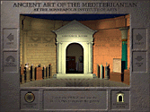
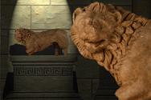
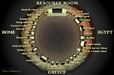
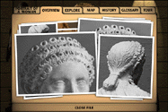
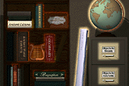
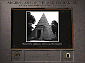

Ancient Art of the Mediterranean
Location: Ancient Art, 2nd floor
You enter the museum. You make your way to
the Ancient Art galleries, where you visit your favorite
objects--the magnificent Roman marble copy of Polykleitos'
Doryphoros, the Greek Crouching Lion, the Assyrian Winged
Genius, the Egyptian Model Boat.
But now, situated near these familiar treasures, you see
something new -the sixth of The Institute's interactive
multimedia programs, Ancient Art of the Mediterranean. Here
too, you find a gallery...on a computer screen. Situated
chronologically around a three-dimensional, open air,
rotunda-like space, you see 38 objects from the museum's
permanent collection.
Through a complex
combination of techniques, photographic images of these
works have been seamlessly blended with intricately
designed, computer-rendered surroundings. The
chronologically based layout, together with the architecture
of this virtual gallery, underscores the historical
succession of Mediterranean cultures, from Egypt to Greece
to Rome.
Touch the screen and you find this simulated space is fully
navigable. Walk right up to the False Door, the Striding
Figure, or the Etruscan Cinerary Chest.
A
bird's-eye view lets you see the floorplan from above
and jump to any object in the space. When you touch an
object's pedestal you find a wealth of information embedded
in the objects themselves.
A stack of file
folders loaded with information about your chosen object appears.
There's an identification card containing the object's vital statistics;
a brief summary in which photographs appear, showing details and comparisons
as you hear a description of the piece; a series of questions to provoke
you to look more closely at the actual object and think about its qualities
and mysteries; a map, pinpointing the object's origin (with an option
to instantly view present-day political boundaries); and a list of major
events of the Mediterranean region and the rest of the world, around the
time the particular object was made.
In the program's virtual gallery, just as in the museum's actual one,
you can browse from object to object, spending as much time as you like
with each piece.

At any time you can enter the Resource Room, another invented space
within the program, which contains books and maps, and allows easy access
to the same files available in the program's gallery, but here sorted
by culture and theme.
When you leave the program to explore the museum's actual galleries, you
may find that your relationship with the objects -even those you already
knew so well- has been enhanced as a result of new information, and broadened
through the context provided by the Ancient Art of the Mediterranean interactive
multimedia program.
This program is a production of the Institute's Interactive Media Group:
Andy Atwood; Julie Loney; Lisa Nebenzahl; Jim Ockuly; Scott Sayre; and
Tammy Sopinski, in cooperation with the Education Division: Kate Johnson,
Chair, and the Department of Decorative Arts, Sculpture, and Architecture:
Christopher Monkhouse, Bell Memorial Curator. Ancient Art of the Mediterranean
and the five other interactive programs already installed throughout the
museum are made possible through the generous support of the General Mills
Foundation.

Send comments to the webmaster.